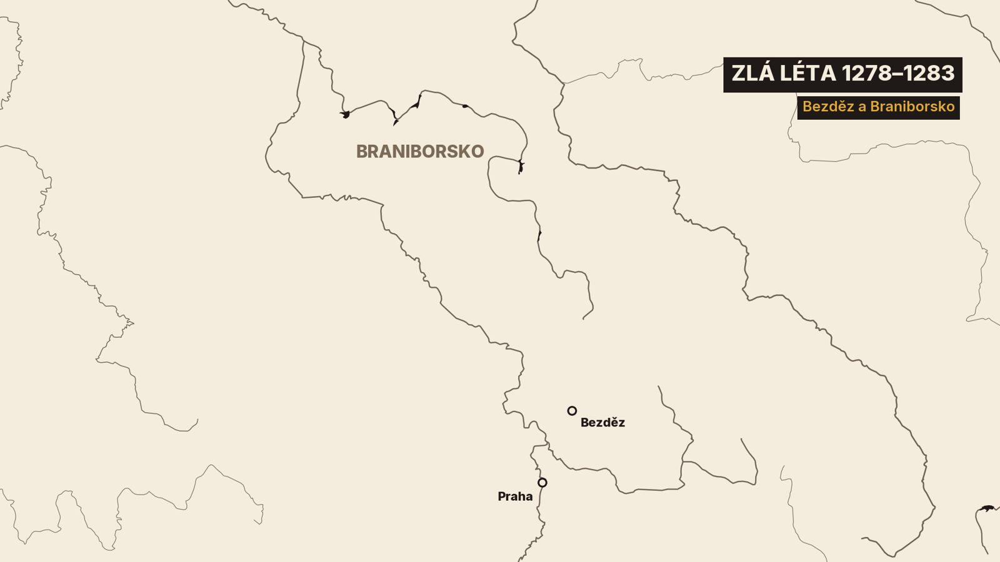

0. Loď s mrtvým králem
Červen roku 1305. Z Prahy vyplouvá po Vltavě loď. Veze mrtvého krále.[2]
Na sobě má korunovační roucho. Na hlavě korunu, v rukou žezlo a jablko. On sám si to přál jinak. Chtěl ležet v šedém mnišském plášti. A pohřbít se nechat pod okapem, na nejhorším místě kláštera.[2]
Loď pluje na Zbraslav, do kláštera, který ten král založil. Jeden z mnichů byl u toho. Později zapsal: „Nikdy bych tomu nevěřil, kdybych tam sám nebyl.“[2]
Nikdy bych tomu nevěřil, kdybych tam sám nebyl.
Ten král se jmenoval Václav II. Bylo mu třicet tři let. Byl králem v Čechách i v Polsku.[2]
1. Loď s mrtvým králem
V minulém speciálu jsme vyprávěli o jeho otci, Přemyslu Otakarovi II. A skončili jsme posměškem. Italský básník Dante napsal, že Otakar byl lepší už v plenkách než jeho syn Václav.[5]
„Slul Otakar a lepší v plenkách býval než Václav, jeho syn, byl s dlouhou bradou, jenž se zahálkou přepych v zvyku míval.“[5][4]
Slul Otakar a lepší v plenkách býval / než Václav, jeho syn, byl s dlouhou bradou, / jenž se zahálkou přepych v zvyku míval.
Mniši ze Zbraslavi ale psali o úplně jiném člověku. O chlapci, který vyrostl jako rukojmí. O králi, který neuměl číst, a přesto opravoval učené předčitatele. A o muži, který měl stříbro z Kutné Hory, a přesto chtěl ležet na nejhorším místě kláštera.[2]
Kde je pravda? Dnes se podíváme na obě strany. Hlavními svědky budou dva mniši ze Zbraslavi. Psali o svém zakladateli, takže ho chválí. Proti nim postavíme Dantovu výsměšnou báseň a českou kroniku, které se říká Dalimilova. Ta Václavův dvůr kritizovala.[2][3]
Než začneme, krátce, odkud ten chlapec vyšel.
2. Noc na voze
Podzim roku 1278. Václavovi je sedm let. Jeho otec před několika týdny padl v bitvě na Moravském poli. O tom byl celý minulý speciál.[2]
Vítězem bitvy byl Rudolf Habsburský, římský král, tedy panovník Svaté říše římské. A ten teď rozhodl, co bude s Čechami. Svěřil je na pět let do správy braniborskému markraběti Otovi. Markrabě je vládce pohraniční země, tady Braniborska na severu Říše. Ota měl být poručníkem malého Václava.[2][8]

Ota ale nejednal jako poručník. Jedné noci, v nepohodě, dal královnu Kunhutu a jejího syna vzbudit, naložit na vůz a odvézt na hrad Bezděz. Prý jen v lehkém oblečení.[1]
Bezděz dal postavit Václavův otec. Teď se stal vězením pro jeho rodinu. K Václavovi a jeho matce smělo jen pár Čechů, hlídali je Němci. Královnin dvůr se rozprchl.[19][1]
Čeští páni žádali, aby Ota přestěhoval královnu a jejího syna do Prahy. Tam se chlapec narodil a tam má vyrůstat. Ota to slíbil. Ale neudělal to.[1]
A pak přišel útěk. Jen ne Václavův. Útěk jeho matky. Pražský autor ho popisuje krok za krokem.[1]
Královna nejdřív požádala purkrabího Bezdězu, jestli smí na pouť do nedalekého kostela. Smí, ale děti zůstanou na hradě. Vrátila se. Pak si vyprosila druhou cestu, ke klášteru. A zase se vrátila. Potřetí jela na tři dny na Mělník. A znovu se vrátila.[1]
Napočtvrté si vyprosila cestu do Prahy, za sestrou. Tam předstírala, že jede na Moravu na pohřeb svého muže. Místo toho uprchla až do Opavy. Děti zůstaly na Bezdězu.[1]
Autor královnu nekárá. Jen dodává: „Nebo někdy lži jsou prospěšné.“[1]
Nebo někdy lži jsou prospěšné.
Sedmiletého Václava pak Ota odvezl z Čech do své země. Zbraslavská kronika píše jen „do Saska“. Domů se Václav vrátí až za čtyři roky.[2]
Co se s ním v cizině dělo, víme od lidí, kteří s ním tehdy byli.
3. Veselá tvář
Václav byl syn krále. V Sasku ale často hladověl. Ráno prý vstal a neměl chleba. Nosil prostou tuniku a lněné prádlo mu nedali, jen vlněné. A boty měl roztrhané, protože neměl ani peníz, aby je dal spravit.[2]
Přesto před ostatními smutek nedával najevo. Byli s ním i jeho druhové z Čech. A on jim často ukazoval veselou tvář, aby neklesli na mysli.[2]
Svým druhům ve vyhnanství často ukazoval veselou tvář, aby zarmoucení neklesli na mysli.
Modlil se sám, v ústraní. Kronikář mu do úst vkládá modlitbu ve verších. V ní chlapec prosí, že by mu byl milejší čestný konec než takový život. Verše složil kronikář, ne Václav.[2]
V Čechách zatím vládli Otovi lidé a přišel velký hlad. Čeští páni se nakonec s Otou dohodli. Zaplatí mu 15 000 hřiven stříbra a on jim vrátí krále.[1]
Jenže první návrat se nepovedl. Chlapce přivezli do Čech, aby ho páni viděli živého a zdravého. Páni ale uviděli kluka velmi zesláblého z vyhnanství. S markrabětem se o penězích nedohodli. A dítě odvezli zpátky do Saska.[2]
Ota si nakonec řekl o dalších 20 000 hřiven. A do zástavy dostal pět severočeských hradů, mezi nimi i Bezděz.[1]
V květnu roku 1283 se jedenáctiletý Václav vrátil do Prahy. Hráli tympány, citery a trouby, tanečníci tančili. Lidé zpívali píseň Hospodine, pomiluj ny.[1][2]
Zbraslavský kronikář k vyprávění o těch letech připsal: „To mi vyprávěli ti, kdo s ním často byli.“[2]
Václav byl doma. Bylo mu jedenáct a měl vládnout. Na to byl ale ještě moc mladý. A brzy se kolem něj objevil muž, který vládl za něj.
4. Otčím
Kde byla celou dobu Václavova matka? Kunhuta žila na Opavsku. A u ní byl rytíř Záviš z Falkenštejna.[2]
Záviš pocházel z mocného jihočeského rodu Vítkovců. Václavův otec ho kdysi vyhnal ze země. Teď byl Kunhutiným nejbližším mužem. Narodil se jim syn Jan.[2][3]
Zbraslavský kronikář to přičítal kouzlům. Záviš si prý královnu získal kouzelnickými klamy. Mnich ale Záviše nenáviděl, a tak jeho slova nebereme doslova.[2]
Když se Václav vrátil do Prahy, matka mu napsala. Třásla se prý při tom a nejdřív se neodvážila přijet. Syn ji pozval. A přijal ji bez výčitek.[2]
Záviš chvíli vyčkával na moravských hradech. Bál se českých pánů. Pak ale přišel ke dvoru a během krátké doby obsadil úřady svými lidmi. Kdo chtěl ke králi, dostal se k němu stěží. A odpověď nedostal od krále, ale od Záviše.[2]
Mnich to shrnul do rýmu. „O krále nikdo nedbá, Záviš je pokládán za velikého.“[2]
O krále nikdo nedbá, Záviš je pokládán za velikého.
Tentýž nepřátelský kronikář ale přiznává ještě jednu věc. Václav sám dal svolení, aby si Záviš vzal jeho matku. A pak ho měl, jak píše, téměř jako otce. Svatba byla roku 1284, možná o rok později.[2]
Zatímco Záviš vládl, Václav se oženil. Nevěstu mu vybral už jeho otec, ještě před Moravským polem. Byla to Guta, dcera Rudolfa Habsburského. Tedy dcera muže, který porazil jeho otce.[2]
V lednu roku 1285 se setkali v Chebu. Oběma bylo třináct. Líbali se prý a objímali. Manželství bylo naplněno.[2]
A pak Rudolf odvezl dceru zpátky domů. Tušil prý cosi zlého o českém dvoře.[2]
To zlé měl nejspíš na mysli Záviše. Ten přijel do Chebu s králem a královnou, ale do města nevstoupil. Cítil Rudolfův hněv, a tak zůstal venku za hradbami.[2]
V září téhož roku Kunhuta zemřela. Kronikář napsal: král pláče pro matku, Záviš pro manželku.[2]
Václavovi bylo skoro čtrnáct. Měl ženu, kterou nesměl mít u sebe. A otčíma, který vládl za něj. Jak se ho zbavil?
5. Pozvání na křtiny
O dva roky později, v roce 1287, přijela Guta konečně do Čech. Páni na to naléhali. Báli se, že kdyby král zemřel bez dědice, země by se ocitla v nebezpečí.[2]
Kronikář Gutu líčí s velkou láskou. Když projížděla zpustošenou zemí, prý hořce zasténala a slíbila pomoc chudým. Mluvila s Němci i s Čechy tak, že na ní nikdo nenašel nic k výtce. A dívky u dvora učila tkát, příst a šít.[2]
Asi o rok později se jim narodil první syn. Dostal jméno po dědovi, Přemysl Otakar. Zemřel ještě týž rok.[2]
Záviš byl tou dobou vdovec, ale zůstal mocný. A hledal si novou manželku. Našel ji v Uhrách. Byla to sestra uherského krále, jeptiška z dominikánského kláštera.[2]
Cesta pro nevěstu ale nezačala dobře. U Železných hor Záviše přepadl jeden z českých pánů a obral ho o vozy. Záviš utekl do kláštera. Přesto pak do Uher dojel. A s nevěstou se usadil na hradě Svojanov.[2]
Narodil se jim syn. A Záviš pozval na křtiny dva krále, uherského i českého. Křtiny se měly konat na hranici.[2]
Někteří prý tvrdili, že Záviš chtěl Václava na křtinách zabít. Zbraslavský mnich ale přiznává, že to ví jen z řečí lidu. O Závišových úkladech se mluvilo tak, že o nich věděli i holiči.[2]
Václav se nemohl nikomu svěřit. Všichni jeho rádci byli Závišovi příbuzní. A tak se o samotě modlil a slíbil, že když se zachrání, postaví klášter. Ten slib ještě dodrží.[2]
Pak použil lest. Vzkázal Závišovi, že bez jeho doprovodu na křtiny nepojede. Záviš přijel do Prahy. A na Pražském hradě ho tajně svolaní věrní zajali. Bylo to nejspíš na konci roku 1288.[2]
Záviš zůstal ve vězení skoro dva roky. Václav po něm chtěl poklad a královské insignie po otci. Pak s ním vojsko táhlo k Hluboké, kterou držel Závišův bratr. Měli hrad vydat. Nevydali.[2]
A tak Záviše v srpnu roku 1290 sťali pod hradem, před zraky jeho bratrů. Pohřbili ho v klášteře ve Vyšším Brodě, v rodovém klášteře Vítkovců.[2][18]
Dalimilova kronika to říká jedním veršem. „Tehdy Záviši pro mater hlavu spudi.“ Tedy: kvůli matce mu dal srazit hlavu. Jiný rukopis kroniky ale přidává jiný důvod. Záviš si vzal sestru uherského krále a psal se moravským knížetem.[3]
Tehdy Záviši pro mater hlavu spudi.
Václavovi bylo osmnáct. Otčím byl mrtvý a vládl už jen on. Jednu radu ale ještě dostal. Od tchána.
6. Rada od tchána
Ještě když Záviš seděl ve vězení, setkal se Václav v Chebu znovu s Rudolfem Habsburským. Bylo to roku 1289, možná o rok později.[2]
Kronikář tvrdí, že tchán dal mladému králi radu, jak vládnout. A zapsal ji ve verších, jako malé zrcadlo pro vladaře. Mluv pravdivě a krátce. Neslibuj, co nechceš dát. Jez a pij mírně. Vyhýbej se kostkám.[2]
A ještě jedna rada. Budeš prý milý, když se spokojíš s objetím jediné ženy.[2]
Mluv pravdivě a krátce… Nikdy neslibuj, co nechceš dát… Spokoj se s mírným pitím a jídlem… Vyhýbej se kostkám.
Ty verše složil kronikář, ne Rudolf. Ukazují ale, jakého krále si mniši přáli.[2]
Další setkání bylo v Erfurtu. Rudolf tam navzdory stáří tančil s mladými. Při loučení Guta plakala. Jako by tušila, že otce už neuvidí.[2]
A opravdu ho neviděla. Rudolf zemřel v létě roku 1291.[2]
Václavovi bylo devatenáct. Otec, matka, otčím i tchán byli mrtví. Teď už rozhodoval jen on. Jaký to byl člověk?
7. Král, který neuměl písmena
Zbraslavský kronikář věnoval Václavově povaze celé kapitoly. A jednu z nich začíná překvapivě. Král neznal písmena. Neuměl číst.[2]
Hned ale dodává, co uměl. Všechno, co mu kdo předčítal, pochopil zdravěji a jasněji než ostatní. A pamatoval si to. Co jednou slyšel, už nezapomněl. Na rozdíl od mnohých, kdo četli sami.[2]
Ačkoli neznal písmena, všechno chápal zdravěji a jasněji než ostatní. Co jednou slyšel, už nemohl zapomenout.
Latinou prý mluvil a jen zřídka udělal chybu. Když se předčitatel přeřekl, král ho hned opravil.[2]
Rád měl u dvora učené muže. Nechával je přede sebou disputovat. S teology o dějinách, s právníky o sporných případech, s lékaři o lécích. A když notáři psali jeho listy, diktoval jim obsah a vytýkal jim, když psali nevhodně.[2]
Byl to tedy král, který se učil ušima.[2]
A byl nesmírně zbožný. Slyšel prý někdy šestnáct, někdy dvacet i více mší za den. Dvořané a mniši odcházeli unavení. A vraceli se, až bylo po všem. Při každé mši král obětoval groš.[2]
Bál se prý bouřky a schovával se v dutém oltáři. A nesnesl ani pohled na kočky.[2]
Kronikář ale uchoval i silnější příběh. Vyprávěla ho Václavova nevlastní sestra Eliška, nemanželská dcera jeho otce. Dokud král žil, přísahala, že bude mlčet. Mnichovi to řekla až deset let po jeho smrti.[2]
V Brně si jednou všimla, že král přešlapuje z nohy na nohu. Ptala se proč. Přiznal, že předtím hrubě odbyl prosbu jednoho rytíře. A za trest si svíčkou popálil holé nohy na pěti místech.[2]
Historik Libor Jan, autor nového Václavova životopisu, ale z příběhů o kočkách, bouřce a svíčce odmítá vyvozovat nějakou duševní poruchu. Podle něj patří k obrazu zbožného, kajícího panovníka, jaký chtěla kronika ukázat.[25]
Pro zbraslavského mnicha byl Václav skoro světec. Česká Dalimilova kronika ukazuje jiného Václava.[3]
I ona ví, že rád poslouchal mše a modlil se hodinky jako kněz. Ale vyčítá mu, že o svůj úřad dbal nejméně. Na soudu prý nesedal. Sirotci a vdovy na něj volali, klečeli před ním, a on odcházel. Soud nechal pánům a ti si dědictví sirotků rozdělili.[3]
On sirotku na sudu nesědieše.
Dva kronikáři, dva obrazy. Pro jednoho kajícník, který by se nejraději stal mnichem. Pro druhého král, který nechal vládnout jiné. A ten slib z doby Záviše? Ten král splnil.
8. Královský dvůr
Klášter chtěl Václav postavit na Zbraslavi u Prahy. Dvořané ale namítali, že to místo měl rád už jeho otec. Jezdil tam na lov a nechat si pouštět žilou. A tak král slib nějakou dobu odkládal.[2]
Mnichy si vyžádal z cisterciáckého kláštera v Sedlci u Kutné Hory. Sedlecký opat tam v slzách vyvolával dvanáct jmen. Kdo bude jmenován, odejde na Zbraslav.[2]
Mezi vyvolanými byl i starý mnich Jan. Když vstal, řekl prý: „Zde je můj odpočinek navěky.“ Král se divil, proč posílají někoho tak zesláblého stářím. Ten přece brzy zemře. A mnich do osmi dnů opravdu zemřel.[2]
Na jaře roku 1292 se mniši na Zbraslavi usadili. Václav místo přejmenoval na Aula Regia, tedy Královský dvůr. Dal mu roční důchod, pole, lesy, zlatý kříž s drahokamy. A peníze na knihy, které opati koupili v Paříži.[2]
Kronikář zapsal i jeden sen. Král se jednou probudil vyděšený. Ve snu viděl, jak vichřice kymácí čtyřmi hlavními sloupy jeho nového kostela. Svěřil se opatovi a ten ho uklidňoval.[2]
Ten příběh ale vznikl o mnoho let později. Mnich sen vyložil jako předpověď. Po Václavově smrti klášter vypleněli. Je to tedy výklad zpětně, ne proroctví.[2]
Z kostela, o kterém Václav snil, dnes nic nestojí. Husité klášter roku 1420 vypálili.[24][16]
V sedmdesátých a osmdesátých letech dvacátého století tu ale kopali archeologové. Našli základy velkého kostela. A uprostřed hrob, nejspíš právě Václavův.[23][24]
Klášter, kříž, knihy z Paříže. Na to všechno byly potřeba peníze. A ty Václavovi dala jedna hora.
9. Stříbro a švagr Albrecht
Nedaleko Sedlce se koncem osmdesátých let našlo stříbro. Listina z roku 1289 řeší spor dvou měst o novou horu. Brzy se jí začalo říkat Kutná Hora.[11]
Pověst praví, že stříbro našel sedlecký mnich a na místě nechal svou kutnu. Je to pověst, ne zpráva.[11]
Doly byly dřív než město. Archeologové zjistili, že ústí šachet leží v trasách dnešních ulic. A haldy hlušiny změnily terén v jižní části města o čtyři až osm metrů. Kutná Hora tak doslova stojí na hlušině.[14]
Zbraslavský kronikář o Kutné Hoře napsal, že přitahuje krále a knížata, protože ve svém klíně živí stříbro. Václavovi to stříbro pomohlo i k zemím.[2]
Hned roku 1291 ho za svého pána přijali krakovští páni. Václav do Krakova sám nejel. Poslal tam pražského biskupa s vojskem. V kronice to stojí stručně: tak se pražský král stal pánem krakovským.[2]
Mocným sousedem byl ale Gutin bratr, Albrecht Habsburský. Pro Václava to byl švagr.[2]
Jednou se spolu měli setkat u Znojma kvůli sporu o území. Domluvili se, že každý přivede jen dvacet lidí. Albrecht ale přivedl nesčetný zástup ozbrojenců. A Václav musel ustoupit.[2]
Brzy se ale karta obrátila. Albrechtovi se vzbouřili jeho rakouští páni. A Guta prý bratrovi napsala. Albrecht pak přijel za Václavem na Moravu, padl mu k nohám a nabídl, že mu bude sloužit jako vazal. Tak to aspoň vypráví zbraslavský kronikář.[2]
Václav měl stříbro, Krakov a švagra na kolenou. Chtěl ale víc než moc. Chtěl změnit zemi.
10. Zákony, škola a korunovace na jeden den
V polovině devadesátých let si Václav pozval z Itálie právníka. Byl to mistr Gozzo z Orvieta. Měl sepsat české zemské právo.[2]
Páni se ale bránili. Báli se prý, že psané právo jim vezme zisk z jejich výmyslů. Král plán odložil. Ale nevzdal se. Poslal mladíka jménem Konrád studovat práva do francouzského Orléansu. Až se vrátí, měl právo v Čechách zavést.[2]
Stejně dopadla i škola. Václav chtěl v Praze založit obecné učení, tedy univerzitu. Páni mu prý odpověděli: Nejdřív zajisti zemi mír, aby sem cizí studenti mohli bezpečně cestovat. Pak ti pomůžeme. Mnich si posteskl, že to jejich zlobou vázne dodnes.[2]
Univerzita v Praze nakonec vznikla. Ale až roku 1348, za Václavova vnuka Karla.[22][20]
Jedno se ale povedlo. V červnu roku 1297 se Václav dal korunovat. Bylo mu dvacet pět let.[2]
Do té doby se pečetil bez koruny. Na jeho pečeti sedí panovník s mečem a nápis ho nazývá pánem a dědicem Českého království. Teprve po korunovaci dostal pečeť s korunou.[13]
Měl to být velký obřad, ale jeden háček tu byl. Korunovat měl mohučský arcibiskup a ten měl od papeže zrovna zakázáno vykonávat úřad. Václavovi poslové proto u papeže vyjednali výjimku. Arcibiskup smí korunovat, ale jen ten jeden den.[2]
Do Prahy přijeli biskupové, knížata a markrabata. Kronika dokonce varuje hosty před kapsáři: Hlídej měšec a zavaž uzly. Kdo neuvěří, sám to pozná.[2]
Hlídej měšec a uzly měj dobře zavázané… Když mi neuvěříš, sám to poznáš.
V katedrále svatého Víta korunovali Václava a Gutu. Lid volal „Ať žije král Václav“. Hosté prý dostali krmivo pro neuvěřitelné množství koní a z pramenů na Novém trhu teklo víno. Bude v tom nejspíš kus nadsázky.[2]
Sedmnáctý den po korunovaci Guta zemřela. Onemocněla po nedávném porodu. Bylo jí dvacet šest. Pohřbili ji na Pražském hradě, u hrobu Václavova otce.[2]
Za deset let v Čechách porodila Václavovi deset dětí. Několik z nich zemřelo malých. Ze synů přežil jediný, také Václav.[2]
Václavovi bylo pětadvacet. Byl korunovaný král a vdovec. A na Zbraslavi, den po korunovaci, položili základní kámen kostela. Tady se zastavíme. Než přijdou další koruny, jedna méně známá tvář tohoto krále.
11. Král, který skládal písně
V německé univerzitní knihovně v Heidelbergu leží slavný rukopis. Říká se mu Codex Manesse. Vznikl v Curychu zhruba v prvních čtyřech desetiletích čtrnáctého století. Jsou v něm písně o lásce od mnoha básníků.[7]
Na samém začátku rukopisu jsou císaři a králové. A hned mezi nimi, na desátém listu, je „král Václav z Čech“.[7]
Pod jeho jménem jsou tři písně. Jedna vypráví o milované, která nabídne milenci svá ústa jako růže, která se otevírá ranní rose. A v poslední sloce stojí zvláštní věta. „Růži jsem neutrhl, a přece jsem ji měl v moci.“[6]
Růži jsem neutrhl, a přece jsem ji měl v moci.
Další píseň je takzvané svítáníčko. Milenci se loučí za úsvitu a dáma prosí strážného, aby je nechal ještě chvíli spolu. Nabízí mu stříbro, zlato a drahé kameny. U krále, který měl Kutnou Horu, to zní skoro jako vtip.[6]
Je ale ten „král Václav“ opravdu náš Václav? Rukopis to neříká. Mohl to být i jeho děd, Václav I. Starší němečtí badatelé písně připisovali Václavu Druhému. Jisté to ale není.[9]
A je tu ještě jedna stopa. Existuje i česká verze jedné z písní. Někdo ji měl za původní a písně kvůli ní připsal Václavu Prvnímu. Odborníci ale nepochybují, že je nepravá.[9]
Jisté je, že u Václavova dvora pobýval jeden z nejznámějších německých básníků té doby, Frauenlob. Na Václavovu smrt prý složil žalozpěv. Ten se ale nedochoval.[9][10]
Ať už ty písně složil, nebo ne, k jeho dvoru básníci patřili. A teď zpátky k penězům. Rok 1300 přinesl dvě velké změny.
12. Tři koruny
První změna se dala podržet v ruce. V létě roku 1300 se začal razit pražský groš. Velká stříbrná mince, která pak skoro čtvrt tisíciletí ovlivňovala obchod ve střední Evropě.[2][12]
O groši jsme vyprávěli v díle Král železný a zlatý. Tady jen to podstatné: na každém groši bylo Václavovo jméno. A stříbro z Kutné Hory teď nemělo odcházet ze země v hrudkách, ale v jeho mincích.[2][11]
Nové peníze ale nezvítězily přes noc. Ukazuje to poklad, který se našel v Černožicích nad Labem. Leželo v něm přes tisíc grošů Václava Druhého. A spolu s nimi neražené stříbrné slitky a staré tenké mince, brakteáty. Lidé ještě nějakou dobu platili postaru i ponovu.[15]
Druhá změna byla koruna. Ve stejném roce, v létě, byl Václav v Hnězdně korunován polským králem. Bylo to v tamní staré románské katedrále, a byla to v ní poslední korunovace.[2][8][26]
S polskou korunou dostal i nevěstu. Byla to dcera zavražděného polského krále Přemysla a jmenovala se Rejčka. Když přijela do Prahy, běžel jí podle kroniky čtrnáctý rok.[2]
A pak tři roky čekala. Václav svatbu odkládal. Rejčku svěřil své tetě, aby ji vychovávala.[2]
Až o Velikonocích v Brně mu opat ze Zbraslavi domluvil. Vaše dvě království mají jediného syna, řekl prý. Nevěsta čeká a vy odkládáte svatbu. Král od té hodiny souhlasil.[2]
Roku 1303 byla svatba i korunovace. Při korunovaci dostala Rejčka na králův příkaz nové jméno, Eliška. Pod tím jménem ji známe dodnes, jako Elišku Rejčku.[2]
A třetí koruna? Ta byla pro syna. Uherský král zemřel a uherští páni si zvolili Václavova syna. Kronikář ironicky píše, že zčásti v naději na královské dary. Když se čeká dar, mysl je ochotná.[2]
V létě roku 1301 korunovali jedenáctiletého Václava uherským králem. Uhrům vládl pod jménem Ladislav.[2]
V Uhrách ale mladý král vydržel jen tři roky. Roku 1304 si pro něj otec dojel s vojskem. Odvezl ho domů. A s ním i uherskou korunu a klenoty.[2][3]
Dalimil píše, že se otec nechtěl pustit do boje, dokud nemá syna doma. Měl totiž jediného syna.[3]
Ten boj přišel hned. Albrecht Habsburský, kdysi na kolenou, byl teď římským králem. Žádal desátek z kutnohorského stříbra, nebo 80 000 hřiven.[8][2] A když nedostal nic, přitáhl ke Kutné Hoře s vojskem. O tom, jak horníci vojsku otrávili potok stříbrnou struskou, jsme už vyprávěli. Albrecht odtáhl.[2]
Václavovi bylo třiatřicet. Byl králem dvou zemí, otcem uherského krále a ubránil se římskému králi. Jenže byl nemocný.

13. Ó Aula Regia
Nemoc v něm dlouho dřímala. Naplno se projevila po návratu z Uher. Kronikář jí říká ftíza, tedy úbytě. Nebrala síly najednou, ale pomalu.[2]
Trvala přes půl roku. Václav měl prý modravou tvář a vyhublé údy. Opatovi ze Zbraslavi jednou řekl: „Teď tak trpím, že kdyby to snášel jiný, křičel by, myslím, až by to slyšelo celé sousedství.“[2]
Hned na začátku nemoci daroval svou drahou postel pražskému špitálu. Oblékl šedou mnišskou tuniku a dal si oholit hlavu.[2]
A často opakoval jednu větu. „Kdybych věděl, že poslední čeledín v mé konírně by vládl lépe, rád bych mu ustoupil.“ Plánoval předat vládu synovi a dožít na Zbraslavi.[2]
Kdybych věděl, že poslední čeledín v mé konírně by vládl lépe, rád bych mu ustoupil.
Chtěl být pohřben v plášti laického bratra, pod okapem, na nejhorším místě. A myslel na svůj klášter. „Ó Aulo Regia, sazeničko, dcerko útlá, jak tě teď nechávám sirotkem?“[2]
Ó Aulo Regia, sazeničko, dcerko útlá, dílo mých rukou, jak tě teď nechávám sirotkem?
Měl i dluhy. Války s Albrechtem a v Polsku stály hodně. Syn mu musel přísahat na hlavu svatého Václava, že je zaplatí. Na splátky šla každý týden část stříbra z Kutné Hory.[2]
Pražský hrad byl tehdy po požáru zpustlý. Král umíral v domě zlatníka Konráda u dominikánů. Krátce před smrtí si zavolal kněze. „Bratři, radujte se se mnou.“[2]
Zemřel 21. června 1305, brzy ráno. Se sklopenýma očima a klidnou tváří, píše kronikář. Bylo mu třicet tři let.[2]
A tady se kruh uzavírá. Oblékli ho do korunovačního roucha, i když chtěl šedé sukno. Pražští kanovníci prosili, aby mohl ležet u nich. Syn odmítl. A druhý den odpoledne loď odvezla tělo na Zbraslav.[2]
Jeho poslední dcera, Anežka, se narodila pár dní předtím. Kronikář napsal: Viděla jen matku. Otce nikdy.[2]
Václavovi Třetímu bylo patnáct. Byl králem Čech, Polska i Uher. A zbýval mu necelý rok.
14. Šestnáctiletý
Zbraslavský kronikář popisuje mladého krále jako ušlechtilého, krásného, odvážného a výmluvného. Mluvil čtyřmi jazyky. A byl štědrý až k marnotratnosti.[2]
Rád popíjel s pány. A ti od něj v opilosti dostávali listiny se statky. Mnich si s tím pohrál. Prý to nebyla privilegia, ale spíš pravilegia. Tedy zkažené výsady.[2]
Uher se vzdal. Ještě na podzim předal v Brně uherskou korunu bavorskému vévodovi Otovi.[2][13]
Na první výročí otcovy smrti ho opat ze Zbraslavi napomenul. Královi lidé pak vyprávěli, že od té hodiny vypadal vážněji.[2]
V létě roku 1306 vyrazil s vojskem do Polska, proti polskému knížeti Vladislavu Lokýtkovi.[2]
Cestou se zastavil v Olomouci. Byl horký letní den. Mladý král byl v paláci sám, jen v košili a plášti. A tam ho někdo zabil. Bylo mu šestnáct let.[2][17]
Kdo to byl? Zbraslavský kronikář píše o třech smrtelných ranách. Z paláce prý vyběhl durynský rytíř Konrád s krvavým nožem. Hned ho chytili a zabili, dřív než mohl promluvit. A dodává: Zda on, nebo jiný je vinen, nevím. Bůh ví.[2]
Dalimilova kronika vypráví jinou verzi. Bylo poledne, král spal a probudil se těžce vzdychaje. Zavolal na děkana: „Pojď ke mně, neb mě jest tuha.“ A vrah, jako by mu chtěl pomoci, mu podřízl hrdlo.[3]
Pojď ke mně, neb mě jest tuha.
Dalimil také ví, kdo za tím stál. Vrahy prý do služby dosadil králův strýc, římský král Albrecht. Je to ale jen Dalimilovo obvinění. Jeho kronika má silně protiněmecký tón. Důkaz nemáme.[3][23]
Václav Třetí byl posledním mužem z rodu Přemyslovců. V kronice to stojí veršem: Tento sedmý král je poslední.[2]
Pohřbili ho v Olomouci. Později jeho tělo převezla na Zbraslav k otci jeho sestra Eliška. Stala se manželkou Jana Lucemburského a matkou Karla Čtvrtého. Přemyslovská krev tak na českém trůně pokračovala. Jen pod jiným jménem.[2][20][21]
Co si z Václavova příběhu odnést?
Za prvé: vyrostl jako rukojmí. Matka utekla, poručník ho odvezl do ciziny a první návrat domů se nepovedl.
Za druhé: dlouho za něj vládl otčím Záviš. Václav se ho zbavil lstí a dal ho popravit.
Za třetí: neuměl číst, a přesto opravoval učené předčitatele. Byl nesmírně zbožný, ale podle Dalimila na soudu nesedal.
A za čtvrté: díky stříbru z Kutné Hory měl groš, tři koruny pro svůj rod a ubránil se římskému králi. Rok po jeho smrti ale rod vymřel.
Dante se mu vysmál jako zhýčkanému lenochovi s dlouhou bradou. Zbraslavští mniši v něm viděli světce. Dalimil krále, který nechal vládnout pány. Kdo z nich měl pravdu? Možná každý trochu.
Napište nám do komentářů, jak ho vidíte vy. Děkujeme, že jste vydrželi až sem.

.jpg){kind=link}

.jpg){kind=link}


.png){kind=link}

_-_Bezd%C4%9Bz.jpg){kind=link}


,_obr._57_%E2%80%93_Zavezen%C3%AD_mlad%C3%A9ho_V%C3%A1clava.jpg){kind=link}

_writing.jpg){kind=link}


.jpg){kind=link}

,_by_V%C3%A1clav_Bro%C5%BE%C3%ADk.jpg){kind=link}
.jpg){kind=link}


.jpg){kind=link}


.png){kind=link}
_(11).jpg){kind=link}


.jpg){kind=link}
,_RP-P-1904-3776.jpg){kind=link}
;_Rooms-Duitse_koning_(1273-1291),_grondlegger_van_de_Habsburgse_dynastie,_Soutman,_Pieter_Claesz.,_FelixArchief,_12_12772.jpg){kind=link}

_Liber_Chronicarum_(serietitel),_RP-P-2016-49-91-5.jpg){kind=link}
.jpg){kind=link}

.JPG){kind=link}

.jpg){kind=link}
.jpg){kind=link}


.jpg){kind=link}


.jpg){kind=link}
.jpg){kind=link}


;_Rooms_keizer,_Soutman,_Pieter_Claesz.,_FelixArchief,_12_12711.jpg){kind=link}

.jpg){kind=link}
.jpg){kind=link}

.jpg){kind=link}


.png){kind=link}
.jpg){kind=link}


_II.,_1297_AD,_Lapidary_of_NM_Prague,_175426.jpg){kind=link}


.jpg){kind=link}
.jpg){kind=link}
_(26350138045).jpg){kind=link}


.jpg){kind=link}


_%C5%A1tola.JPG){kind=link}
,_obr._59_%E2%80%93_V%C3%A1clav_II._v_t%C3%A1bo%C5%99e_p%C5%99ed_Bud%C3%ADnem.jpg){kind=link}


_-_View_NW.jpg){kind=link}


.png){kind=link}


,_obr._60_%E2%80%93_%C3%9Akladn%C3%A1_vra%C5%BEda_v_Olomouci.jpg){kind=link}
.JPG){kind=link}


.jpg){kind=link}